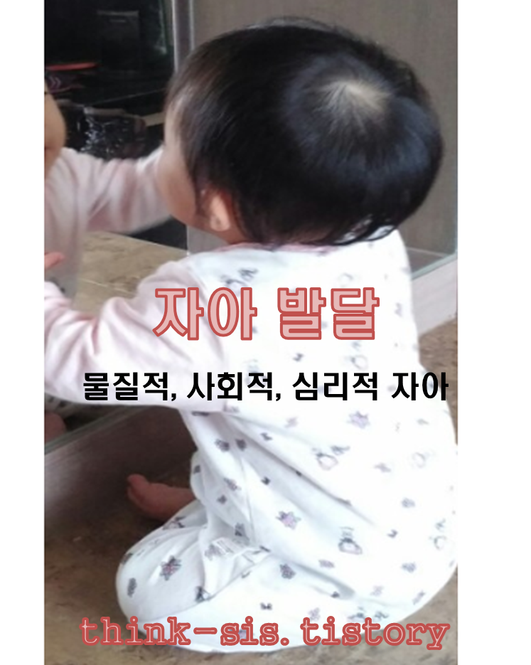

자아의 의의
아이들에게 자아(self)는 자신이 다른 사람과 다른 개체라는 특성을 아는 자기 인식(self–awarenss)을 의미한다. 어린 시기에는 자기의 존재를 이해한 후 자아 개념을 획득한다. 아이는 자기에 대한 인식을 하기 위하여 주변 사물을 탐색하고 자기 의지대로 움지이는지 늘 탐색을 한다.

루이스와 부룩스(Lewis & Brooks-Gunn, 1979)은 영아의 코에 빨간 립스틱을 묻혀 거울 앞에 앉히고 어떻게 반응하는지 살펴보는 실험을 하였다. 이들의 반응을 관찰한 결과, 자기의 얼굴을 인식하고 다른 사람에게 자신의 이름을 말할 수 있으며, 18개월은 거울 속에 비친 상이 자기의 특징에 대한 객관적인 인식이 형성되어 자기를 인지하게 된다(Damon & Hart, 1988).
영아는 자아 인식이 발달하면서 인식되는 자아가 연령이 높아짐에 따라 더욱 다양해지고 자신의 지식 유형도 변한다(송관재 외, 2003; 김현호 외, 2017).
또한 자아의 구성은 자신의 성격 특징에 대한 지각， 타인 또는 환경과 관계를 맺고 있는 자신에 대한 지각， 물질적 경험과 관련된 지각, 목표나 이상에 대한 지각의 요소가 있다.
웰리엄 제임스(William James)는 자아를 ‘한 개인이 자기 것이라고 말할 수 있는 모든 것’ 이라고 정의하고, 자아의 구성 요소를 세 가지로 나타냈다.
자아의 구성
1) 물질적 자아(material self)
물질적 자아는 자신을 형성할 수 있고 자신과 관련된 신체적인 외모， 신체적 특성， 물질적 소유물 등을 포함한다. 자기 신체를 위한 다양한 생활 주면의 물건 및 장난감을 나타낸다.
2) 사회적 자아(social self)
사회적 자아는 타인과의 관계 속에서 나타나는 자신의 신분과 위치를 의미한다. 즉， 사회적 관계나 역할을 통해 드러나는 그 사람의 사회적 면모이자 기능적 측면의 자아로 친구관계，가족관계， 사회적 지위나 신분 등을 포함한다.
3) 심리적 · 영적 자아(psychic or spiritual self)
심리적 · 영적 자아는 어떤 가치관이나 도덕 기준 등과 관련된 자신의 내면적 특성과 자기 반성적인 사고를 의미한다. 내재된 성격, 능력, 적성 등과 다양한 생각과 희망 등까지 포함한다.
아이들의 자아는 총체적이고 미분화적이다. 점차 성장 발달함에 따라 자아도 점점 분화된다. 아이는 자신과 환경을 정확하게 분리하지 못하지만 발달하면서 누적된 시행착오와 다양한 환경적 뎡험으로 자아는 여러가지 형태로 분리한다.
아이는 자아가 형성하는 시점에 이르면 반항을 하기 시작한다. 즉 아빠와 엄마를 구분하고, 또래와 형제관계를 이해하고, 남과 자신이 다른 점이 있다는 사실을 파악한다. 사람과 장난감 그리고 사회적 상황과 세상과 분리해야하는 또다른 내가 존재해야 한다는 호기심을 인식한다.
자아는 자체가 강화(reinforcement) 되는 경향이 있기 때문에 자신이 원하는 어떤 것을 얻으면 그 행동의 강화반응을 지속화· 습관화 시킬 가능성이 높게 이루어진다. 돌 지난 아이들이 "싫어", "안해" 라는 단어를 나타내는 것이 바로 자아의 형성 시기이다.
부모 말에 반대 의견을 나타내면서 고집과 그에 따른 행동으로 표현한 것이다. 그러므로 부모는 이 시기의 아이들에게 순한 아이가 고집을 부리고 투정과 반항을 한다고 걱정하지 않아도 된다. 부모의 말에 반대 의견을 나타내는 순간 자아를 발휘하면서 대인관계를 위한 자주성이 발달하게 된다.
2022.01.10 - [분류 전체보기] - 피아제의 인지발달 4단계와 감각운동기 하위 6단계
피아제의 인지발달 4단계와 감각운동기 하위 6단계
피아제 인지발달 4단계 인지발달은 순서대로 단계를 거쳐 진행되며, 점차 복잡성이 요구된다. 피아제(Piaget)의 인지발달은 다음과 같다. 1. 감각운동기 감각운동기(sensorimotor stage, 출생~2세경)는
think-sis.tistory.com